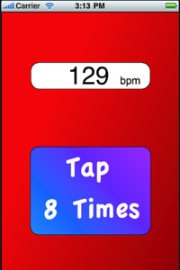
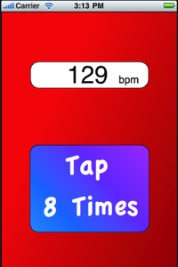

Tap Tempo - Free
is a simple utility for generating bpm value by tapping 8 times on a button.
All you need to do is tap 8 times and a metronome will start playing at the tempo you tapped. The display will show the bpm value.
To reset the tapping sequence just wait for 2 seconds without tapping. This will set the count to zero. (making the minimum value available : 30 bpm )
Any tap on the button will stop a playing metronome but will count as a first tap for a new sequence of 8 taps. So, when stopping the metronome it is recommended to wait 2 seconds before starting a new sequence.
 
